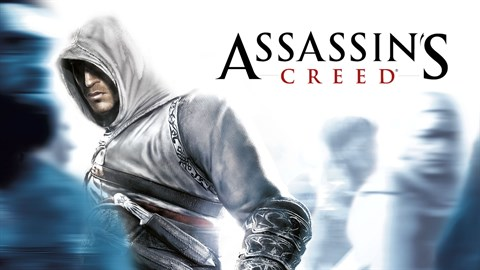

Journey Through The Saga

Assassin's Creed (2007)
Third Crusade • 1191
The journey begins with Altaïr Ibn-La'Ahad during the Third Crusade and the awakening of Desmond Miles.
Altaïr
Holy Land

Assassin's Creed II (2009)
Italian Renaissance • 1476-1499
Enter the Italian Renaissance and meet Ezio Auditore da Firenze on his quest for justice and vengeance.
Ezio
Italy

Assassin's Creed: Brotherhood (2010)
Renaissance Rome • 1500-1507
Ezio leads the Brotherhood in Rome, expanding the Assassin Order and continuing the war against the Borgia family.
Brotherhood
Rome

Assassin's Creed: Revelations (2011)
Ottoman Empire • 1511-1512
Ezio follows in Altair's footsteps to unlock secrets buried in Constantinople, concluding both legends' stories.
Finale
Constantinople

Assassin's Creed III (2012)
American Revolution • 1754-1783
As the American Revolution rages, Desmond learns his ultimate role through the story of Connor Kenway.
Connor
America